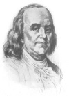

Benjamin Franklin (1706-1790) bilime büyük katkılarda bulunmuş ilk Amerikalılardan biridir. Pratik zekası, Amerikan Devrimi’ne olan desteği ve yaptığı elektrik deneyleri ile ünlüdür. Çok sayıda icat yapmıştır. Bunların arasında iki odaklı lensler, paratoner ve franklin sobası da bulunmaktadır. Buluşları ve muzip kişiliği onu uluslararası üne sahip bir insan ve adeta bir ulusun beden bulmuş hali konumuna getirmiştir.

Boston’da doğan Franklin, bir gazete yayımcısı olan ağabeyinin yanına çırak olarak verilmişti. Genç delikanlı en sonunda ağabeyinin kötü muamelesinden yıldı ve Philedelphia’ya gitti. Burada kendi gazetesini çıkaracak ve sonunda talih yüzüne gülecekti.
Franklin’in mali başarısı ona bilim ve politika ile ilgilenme şansı verdi. 1743 yılında “Amerikan Felsefe Topluluğu”nu kurdu. On üç kolonide yürütülen bilimsel çalışmaları desteklemek istiyordu. 1748 yılında basım işini bıraktıktan sonra elektrikle ilgili deneyler yapmaya başladı. 1750 yılında yıldırımın, elektriğin bir formu olduğunu savunan bir makale yayınladı.
Yazı, Franklin’in uçurtma ile yaptığı meşhur deneyini açıklıyordu. Yıldırım uçurtmaya çarptığında enerji tel üzerinden toprağa geçiyordu. Bu onun teorisine göre yıldırımın elektriğin bir formu olduğunu kanıtlıyordu. Franklin’in yazıda açıkladığı deneyi gerçekten yaptığını gösteren hiçbir kanıt bulunmamaktadır. Gerçekten de böyle bir deneyin ölümcül sonuçları olması mümkündür.
Franklin 1757 yılında Pennsylvania Meclisi’ni temsil etmek üzere Londra’ya gönderildi. Sonraki yirmi yıl boyunca büyük ölçüde İngiltere’de yaşadı. Giderek huzursuzlanan koloniler adına İngiltere’de diplomasi faaliyeti yürüttü. Savaşın başlamasının ardından 1775 yılında geri döndü. 1776 yılında “Bağımsızlık Deklarasyonu”na imza atanlardan biri oldu.
Kongre daha sonra Franklin’i Paris’e gönderdi. Bilimsel ünü sayesinde Fransız hükümetini kolonilere yardım etmeye ikna etti.
Ömrünün son yıllarında otobiyografisini yazdı ve köleliği eleştiren yazılar kaleme aldı. Seksen dört yaşında Philedelphia’da öldü. Bilim, astronomi ve mühendislik alanında araştırmalar yapan, aynı zamanda bir müze olan Philedelphia’daki Franklin Enstitüsü ölümünün ardından açıldı.
Ek Bilgiler
1- Franklin, Boston ve Philedelphia şehirlerine 1.000’er poundluk miras bırakmıştı. Tek şartı paranın 200 yıl boyunca faizde bekletilmesiydi. 200 yıl sonra, 1990’larda her iki şehire miras bırakılan para milyonlarca dolara ulaşmıştı.
2- Fırtınanın altında uçurtma uçurmayın! Franklin’in deneyinden ilham alan pek çok kişiye deneyi tekrarlamaya çalışırken elektrik çarpmıştır.
3- Franklin’in ilk paratonerleri Philedelphia’da iki önemli binaya takılmıştır: “Bağımsızlık Salonu” olarak bilinen Philedelphia Hükümet Binası ve sonraki elli yıl boyunca on üç koloninin en yüksek binası olarak kalacak olan Christ Kilisesi’nin üzerindeki kuleye.